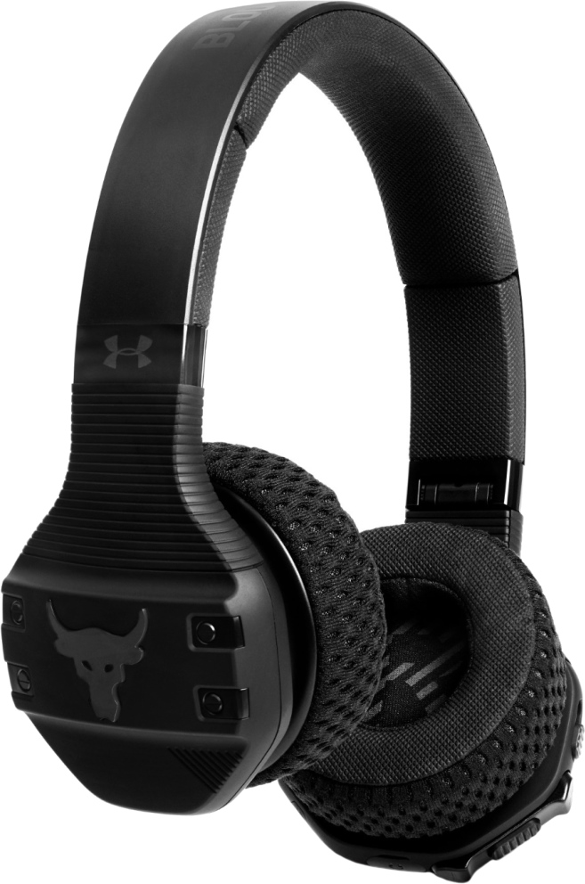

Наушники JBL Under Armour Sport Wireless Train

Коротко о товаре
- конструкция: накладные (закрытые)
- подключение: Bluetooth 4.1
- тип излучателей: динамические
- время работы: 16 ч
- импеданс: 32 Ом
- диапазон воспроизводимых частот: 16-20000 Гц
- разъем: mini jack 3.5 mm
- длина кабеля: 1.2 м
- вес: 240 г
Описание товара:
беспроводные наушники с микрофоном, накладные, портативные/спортивные,
Bluetooth, 16-20000 Гц, складное
оголовье,
время работы 16 ч, кабель 1.3 м
Характеристики товара
| Тип устройсва |
Беспроводные наушники |
| Конструкция |
Накладные |
| Технология |
Динамические |
| Минимальная Воспроизводимая частота |
16Гц |
| Максимальная воспроизводимая частота |
20000 Гц |
| Вес |
240г |
| Функции |
Возможность регулировки громкости |
| Тип акустического оформления |
Закрытые |
Подробное описание товара
Беспроводные наушники UA Sport созданы для тренировок в спортзале. Амбушюры UA SuperVent облегают уши и
обеспечивают
настоящую воздухопроницаемость благодаря лёгкому, прочному, быстросохнущему материалу, который можно
снимать
и
промывать вручную.
Амбушюры сохраняют прохладу и сухость, а материал Under Armour обеспечивает
надёжную
фиксацию,
мягкость и максимальную стабильность.
Многофункциональная кнопка с технологией TalkThru позволяет приостанавливать и воспроизводить музыку,
включать
оптимизированный для разговора микрофон с функцией шумоподавления, позволяющий легко общаться с
партнёрами
по
тренировке,не снимая наушников.
Большие элементы управления обеспечивают лёгкий доступ к ним во
время
интенсивной
тренировки.
Аккумулятор на 16 часов использования поддерживает функцию быстрой зарядки: для одночасовой
тренировки
потребуется
всего 5 минут зарядки.
Долговечные наушники протестированы спортсменами.
Подробный обзор
Все права защищены